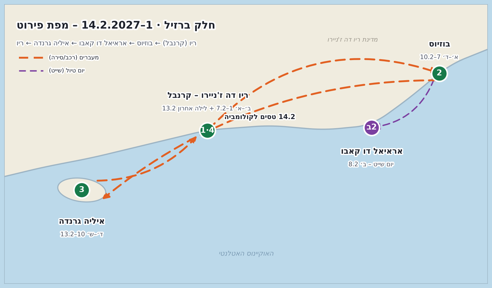

🇧🇷🇨🇴 ברזיל וקולומביה – קרנבל 2027
34 ימים · 1.2–6.3.2027 · 14 ימים בברזיל + 20 בקולומביה
ריו בקרנבל ← בוזיוס ואראיאל ← איליה גרנדה ← ריו ← עמק הקפה ← מדג'ין ← סנטה מרטה ← קרטחנה ← סאן אנדרס
🗺️ המסלול על המפה


לחצו על תחנה כדי להתמקד בה במפת Google, או על "🗺️ הצג במפה" ליד כל מקום ברשימה למטה.
🗺️ טעינת כל הסיכות ל-Google Maps (פעם אחת, 5 דקות)
- נכנסים ל-Google My Maps ולוחצים Create a new map.
- בכל שכבה לוחצים Import ומעלים קובץ KML אחד מהרשימה (שכבה לכל תחנה), או את הקובץ המאוחד.
- המפה מופיעה אוטומטית באפליקציית Google Maps בטלפון תחת שמורים ← מפות.
🎭 ריו דה ז'ניירו – ימי הקרנבל
ימים 1–7 · ב׳–א׳ 1–7.2.2027➔ ✈️ נחיתה בריו (GIG) ביום ב׳ 1.2.2027. לינה באזור איפנמה / קופקבנה. להזמין לינה וכרטיסי סמבודרום חודשים מראש – מחירי קרנבל!
📅 יום-יום
- ב׳ 1.2 — נחיתה והתאקלמות: הגעה למלון, ותצפית שקיעה על סלע Arpoador עם קאיפיריניה ראשונה בים.
- ג׳ 2.2 — יום האייקונים: פסל ישו הגואל בבוקר (לפני העומס) והר הסוכר לשקיעה. ערב: ארוחת בשרים חגיגית ב-Churrascaria Palace.
- ד׳ 3.2 — בוקר: טרק Morro Dois Irmãos לתצפית המטורפת על העיר. ערב: מסיבות רחוב מקדימות (Pré-Carnaval Blocos) בלאפה או בסנטה טרזה.
- ה׳ 4.2 — בוקר: חוף Joatinga המסתתר בין הצוקים. ערב: הכנות לקרנבל – נצנצים, תלבושות ואביזרים בשוק Saara.
- ו׳ 5.2 — פתיחת הקרנבל הרשמי! 🎉 יום שלם של Blocos de Rua – מסיבות רחוב המוניות בתחפושות בכל העיר. לילה (אופציה מטורפת): המצעד הראשון בסמבודרום (Série Ouro).
- ש׳ 6.2 — יום קרנבל מלא! בוקר: בלוקו הענק Cordão da Bola Preta במרכז. אחה״צ: מסיבת סירה (Party Boat) או בלוקו בקופקבנה. ערב אחרון בלאפה.
- א׳ 7.2 — יציאה מוקדמת בבוקר לבוזיוס – לפני שהעיר מתעוררת.
📍 המקומות
- ✈️שדה תעופה גליאאו (GIG)
נחיתה ביום ב׳ 1.2.
- 🥾תצפית Arpoador
הסלע בין איפנמה לקופקבנה – השקיעה הראשונה של הטיול + קאיפיריניה.
- 🥾טרק Morro Dois Irmãos
מוטו-טקסי לראש פאבלת וידיגל + כ-40 דק׳ הליכה לתצפית הכי שווה בריו. בוקר ד׳ 3.2.
- 🥾חוף Joatinga
חוף נסתר בין צוקים בשכונת ז׳ואטינגה – מגיעים בשביל ירידה קצר. בוקר ה׳ 4.2.
- 🥾שוק Saara – ציוד קרנבל
מתחם שוק ענק במרכז – נצנצים, תלבושות ואביזרים בזול. ערב ה׳ 4.2.
- 🥾חוף איפנמה
בסיס הלינה – פוסטו 9.
- 🥾חוף קופקבנה
טיילת הגלים המפורסמת.
- 🥾פסל ישו הגואל
בוקר ג׳ 2.2 – לעלות מוקדם לפני העומס.
- 🥾הר הסוכר (Pão de Açúcar)
רכבל לשקיעה – ערב ג׳ 2.2.
- 🥾🎭 הסמבודרום – מצעד Série Ouro
ליל שישי 5.2 מ-21:00: מצעד הפתיחה של הקרנבל. כרטיסים מראש! (מצעדי-העל: ראשון–שלישי 7–9.2).
- 🍻🎭 לאפה – Pré-Carnaval
אזור המסיבות המקדימות – ערב ד׳ 3.2 מתחת לקשתות.
- 🍻🎭 סנטה טרזה – בלוקו Carmelitas
בלוקו שכונתי מקסים בסמטאות – פתיחת הקרנבל, שישי 5.2.
- 🍻🎭 בלוקו Cordão da Bola Preta
הבלוקו הוותיק והענק של ריו – שבת 6.2 בבוקר. מיליון חוגגים ברחוב.
- 🍻🎭 מסיבת סירה – Marina da Glória
Party Boat במפרץ גואנברה – שבת 6.2 אחה״צ (להזמין מראש).
- 🍻Churrascaria Palace
ארוחת הבשרים החגיגית – ערב ג׳ 2.2.
- 🍻Rio Scenarium – סמבה בלאפה
מועדון סמבה איקוני על 3 קומות – לערב שלא בבלוקו.
- 🏨Janeiro Hotel (בוטיק)
בוטיק שקט מול חוף לבלון.
- 🏨Selina Copacabana (הוסטל)
הוסטל-בוטיק ברמה גבוהה בקופקבנה.
- 🏨Ipanema Beach House (הוסטל)
הוסטל עם בריכה במרחק הליכה מהחוף.
⛵ בוזיוס + אראיאל דו קאבו
ימים 7–10 · א׳–ד׳ 7–10.2.2027➔ 🚐 ראשון 7.2 בבוקר מוקדם: רכב/שאטל מריו לבוזיוס (כ-2.5–3 שעות) – יציאה מוקדמת חוסכת את פקקי הקרנבל.
📅 יום-יום
- א׳ 7.2 — הגעה לבוזיוס בצהריים, צ׳ק-אין ואחה״צ רגוע בטיילת Orla Bardot. ערב: הברים והמועדונים של Rua das Pedras.
- ב׳ 8.2 — טיול יום לאראיאל דו קאבו – ׳הקריביים של ברזיל׳, כשעה נסיעה בלבד: שייט במים טורקיז צלולים, עצירה ב-Praia do Farol עם החול הלבן הבוהק, ומדרגות העץ המפורסמות של Prainhas do Pontal do Atalaia. חוזרים לבוזיוס בערב.
- ג׳ 9.2 — יום חופים בבוזיוס: שכירת באגי להקפת החופים – Azeda, João Fernandes ו-Ferradura. שקיעה ומסיבה ב-Silk Beach Club.
- ד׳ 10.2 — בוקר רגוע בחוף Geribá, ונסיעה דרומה לכיוון נמל המעבורות של איליה גרנדה.
📍 המקומות
- 🍻Rua das Pedras – רחוב הברים
הרחוב הראשי של חיי הלילה – ברים, מועדונים ומסעדות.
- 🥾טיילת Orla Bardot
טיילת החוף היפה של בוזיוס – פסל בריז׳יט ברדו והשקיעה.
- 🥾חוף Geribá
חוף הגלישה הגדול – בוקר ד׳ 10.2 לפני ההמשך דרומה.
- 🍻Silk Beach Club
מסיבת השקיעה של בוזיוס – ערב שלישי 9.2.
- 🥾אראיאל דו קאבו – שייט
יציאת השייט של ׳הקריביים של ברזיל׳ – מים טורקיז מטורפים. יום ב׳ 8.2 מוקדם.
- 🥾Prainhas do Pontal do Atalaia
המפרצונים עם מדרגות העץ המפורסמות – החוף הכי מצולם בברזיל.
- 🥾Praia do Farol
חוף שמגיעים אליו רק בשייט – חול לבן ומים שקופים.
- 🥾חוף Azeda
מפרצון קטן ושקט במים צלולים – בהקפת הבאגי של יום ג׳ 9.2.
- 🥾חוף João Fernandes
חוף יפהפה עם ביראכות על המים – בהקפת החופים.
- 🥾חוף Ferradura
מפרץ פרסה שקט – עצירה אחרונה בהקפה.
- 🏨Casas Brancas (בוטיק)
מלון בוטיק עם תצפית על המפרץ.
- 🏨Nomad Búzios (הוסטל)
הוסטל ברמה גבוהה ליד Rua das Pedras.
🏝️ איליה גרנדה – ג'ונגל, טרקים ואיזון
ימים 10–13 · ד׳–ש׳ 10–13.2.2027➔ 🚐 רביעי 10.2: נסיעה מבוזיוס לנמל Conceição de Jacareí (כ-4.5–5 שעות) ← 🛥️ סירה מהירה לכפר Vila do Abraão.
📅 יום-יום
- ד׳ 10.2 ערב — הגעה לאי בסירה. ערב רגוע עם מוזיקת Forró על קו המים ב-Vila do Abraão.
- ה׳ 11.2 — החוף האגדי: שייט + הליכה קצרה בג׳ונגל לחוף Lopes Mendes – חול לבן כמו קמח ומים צלולים. יום שלם בחוף.
- ו׳ 12.2 — שייט Volta a Ilha סביב האי: שנורקלינג בלגונה הכחולה (Lagoa Azul), הלגונה הירוקה וחופים נסתרים. ערב: מדורות ו-Forró בחוף.
- ש׳ 13.2 — 2:00 לפנות בוקר: טרק Pico do Papagaio לזריחה מעל האוקיינוס. צהריים: סירה חזרה ליבשה ונסיעה לריו (כ-3 שעות) – לילה אחרון בעיר.
📍 המקומות
- ✈️נמל Conceição de Jacareí
נקודת היציאה של הסירות המהירות לאי (כ-20 דק׳).
- 🥾Vila do Abraão
הכפר הראשי – בסיס הלינה, המסעדות והסירות.
- 🥾חוף Lopes Mendes
מהחופים היפים בעולם – שייט + הליכה קצרה בג׳ונגל. יום ה׳ 11.2.
- 🥾טרק Pico do Papagaio
טרק זריחה לפסגה בגובה 982 מ׳ – יציאה 2:00 לפנות בוקר עם מדריך. ש׳ 13.2.
- 🥾Lagoa Azul – הלגונה הכחולה
שנורקלינג במים טורקיז – בשייט Volta a Ilha של יום ו׳ 12.2.
- 🍻חוף Abraão – ערבי Forró
מוזיקה חיה ומדורות על קו המים בלילה.
- 🏨Pousada Naturalia (בוטיק)
פוסאדת בוטיק על החוף.
- 🏨Che Lagarto Hostel (הוסטל)
הוסטל ברמה גבוהה במרכז הכפר.
✈️ ריו – לילה אחרון ומעבר לקולומביה
ימים 13–14 · ש׳–א׳ 13–14.2.2027➔ 🛥️ + 🚐 שבת 13.2 אחה״צ: חזרה מאיליה גרנדה לריו. לינה ליד החוף.
📅 יום-יום
- ש׳ 13.2 ערב — צ׳ק-אין, קניות מזכרות מהירות באיפנמה, וערב אחרון – שקיעה בארפואדור או סמבה בלאפה.
- א׳ 14.2 — השכם בבוקר: ✈️ טיסה בינלאומית ריו (GIG) ← בוגוטה (כ-6.5 שעות; בוגוטה שעתיים אחרי ריו – נוחתים מוקדם אחה״צ) ← קונקשן באותו יום לפרירה/ארמניה. ישנים כבר בסאלנטו – בלי לילה מבוזבז בבוגוטה!
📍 המקומות
- 🥾רחוב הקניות של איפנמה
Visconde de Pirajá – מזכרות, הוויאנס ואופנה ברזילאית. ערב ש׳ 13.2.
- ✈️שדה תעופה גליאאו (GIG) – יציאה
טיסת בוקר לבוגוטה – ראשון 14.2. חשוב להזמין את טיסת הבוקר!
☕ עמק הקפה – סאלנטו
ימים 14–17 · א׳ בערב–ד׳ 14–17.2.2027➔ ✈️ א׳ 14.2 אחה״צ/ערב: נחיתה בבוגוטה ← טיסת המשך באותו יום לפרירה (PEI) / ארמניה (AXM), כ-50 דק׳ ← 🚕 מונית לסאלנטו (כשעה). מגיעים לישון בעמק הקפה!
📅 יום-יום
- א׳ 14.2 לילה — הגעה לסאלנטו, צ׳ק-אין וערב רגוע בכיכר העיירה.
- ב׳ 15.2 — טרק עמק הקוקורה (Valle de Cocora) – 5–6 שעות בין עצי דקל השעווה הענקיים. ערב: משחק טחו עם בירות ב-Los Amigos.
- ג׳ 16.2 — בוקר: סיור בחוות הקפה Don Elias. אחה״צ: קפיצה לעיירה הצבעונית פילנדיה. ערב: ביליארד ב-Billar Danubio.
- ד׳ 17.2 — בוקר חופשי בסאלנטו – המירדור, רכיבת סוסים או סתם קפה טוב. מנוחה והתארגנות להמשך.
📍 המקומות
- ✈️שדה תעופה פרירה (PEI)
אופציית נחיתה 1 – כשעה נסיעה לסאלנטו.
- ✈️שדה תעופה ארמניה (AXM)
אופציית נחיתה 2 – כ-50 דק׳ נסיעה לסאלנטו.
- 🥾כיכר סאלנטו והרחוב הצבעוני
העיירה הצבעונית של עמק הקפה – Calle Real והמירדור.
- 🥾טרק עמק הקוקורה
יום ב׳ 15.2 – ג׳יפים יוצאים מהכיכר בבוקר.
- 🥾חוות הקפה Don Elias
סיור קפה משפחתי אורגני – מהפרי אל הכוס.
- 🥾פילנדיה (Filandia)
עיירה צבעונית ושקטה – אחה״צ ג׳ 16.2.
- 🍻Los Amigos – משחק טחו
טחו – זריקות על מטרות אבק שריפה + בירה. חובה!
- 🍻Billar Danubio – ביליארד
אולם ביליארד מקומי אותנטי על הכיכר.
- 🏨Hotel Kawa Mountain Retreat (בוטיק)
ריטריט בוטיק עם נוף להרים.
- 🏨Coffee Tree Boutique Hostel (הוסטל)
הוסטל בוטיק ברמה גבוהה.
🌆 מדג'ין
ימים 18–23 · ה׳–ג׳ 18–23.2.2027➔ ✈️ ה׳ 18.2: טיסה קצרה (50 דק׳) מפרירה למדג׳ין, או 🚌 אוטובוס 6–8 שעות. לינה: El Poblado.
📅 יום-יום
- ה׳ 18.2 — טיסה למדג׳ין וצ׳ק-אין באל פובלאדו. ערב היכרות ברחוב Provenza.
- ו׳ 19.2 — סיור גרפיטי בקומונה 13 והמדרגות החשמליות. לילה: Perro Negro.
- ש׳ 20.2 — יום גואטפה: 740 המדרגות של Piedra del Peñol + העיירה הצבעונית (יום שלם). לילה: Vintrash.
- א׳ 21.2 — רכבל מטרו-קייבל ל-Parque Arví והליכה ביער. ערב רגוע ב-La 70.
- ב׳ 22.2 — יום חופשי בעיר – בריכה, קניות וקפה. לילה: אלקטרוני ב-Salón Amador.
- ג׳ 23.2 — התאוששות והכנות להמשך.
📍 המקומות
- ✈️שדה תעופה מדג'ין (MDE)
השדה הראשי – כ-45 דק׳ מהעיר.
- 🥾קומונה 13 – סיור גרפיטי
יום ו׳ 19.2 – הגרפיטי והמדרגות החשמליות.
- 🥾Parque Arví (רכבל)
יום א׳ 21.2 – עלייה במטרו-קייבל והליכה ביער.
- 🥾Piedra del Peñol – 740 מדרגות
יום ש׳ 20.2 – תצפית האגמים הכי מפורסמת בקולומביה.
- 🥾עיירת גואטפה
העיירה הצבעונית ליד הסלע – כשעתיים ממדג׳ין.
- 🍻Perro Negro – רגאטון
מועדון הרגאטון האגדי בפובלאדו.
- 🍻Vintrash – מועדון
מסיבות אקלקטיות על כמה קומות.
- 🍻Salón Amador – אלקטרוני
מועדון האלקטרוני המוביל בעיר.
- 🍻רחוב Provenza
רחוב הברים והמסעדות של אל פובלאדו.
- 🍻רחוב La 70
רחוב מסיבות מקומי באזור לאורלס/אצטדיון.
- 🏨The Click Clack Hotel (בוטיק)
מלון בוטיק מעוצב באל פובלאדו.
- 🏨Los Patios Cool Living (הוסטל)
הוסטל ברמה גבוהה עם רופטופים.
🌴 סנטה מרטה, מינקה וטיירונה
ימים 24–28 · ד׳–א׳ 24–28.2.2027➔ ✈️ ד׳ 24.2: טיסה ישירה מדג׳ין (MDE) ← סנטה מרטה (SMR), כ-1.25 שעות.
📅 יום-יום
- ד׳ 24.2 — נחיתה בחוף הקריבי. ערב במרכז ההיסטורי – בר La Puerta.
- ה׳ 25.2 — מינקה: מפלי Pozo Azul, אבובים בנהר וקפה הרים. לינה במינקה או חזרה.
- ו׳ 26.2 — פארק טיירונה: טרק ג׳ונגל כ-3 שעות לחוף Cabo San Juan. אופציה ללון בערסלים על החוף.
- ש׳ 27.2 — Costeño Beach או El Rio Hostel – גלישה, אבובים ומסיבות.
- א׳ 28.2 — בוקר חוף אחרון, חזרה לסנטה מרטה – רופטופ La Brisa Loca.
📍 המקומות
- ✈️שדה תעופה סנטה מרטה (SMR)
נחיתה בחוף הקריבי – ד׳ 24.2.
- 🥾פארק טיירונה – כניסת El Zaino
הכניסה הראשית לפארק – תחילת הטרק. ו׳ 26.2.
- 🥾חוף Cabo San Juan
כ-3 שעות הליכה בג׳ונגל אל החוף האייקוני. אפשר לישון בערסלים.
- 🥾מינקה
כפר הרים בג׳ונגל – קפה, מפלים ושקיעות. ה׳ 25.2.
- 🥾מפלי Pozo Azul
בריכות טבעיות – קפיצות למים ואבובים.
- 🍻Costeño Beach
חוף גלישה עם מסיבות – ש׳ 27.2.
- 🏨El Rio Hostel
הוסטל המסיבות על נהר בוריטקה – אבובים ביום, מסיבות בלילה.
- 🍻La Puerta – בר במרכז
הבר הכי חם במרכז ההיסטורי.
- 🍻La Brisa Loca – רופטופ
בר רופטופ ומסיבות – ערב הסיום א׳ 28.2.
- 🏨Masaya Santa Marta (בוטיק)
מלון-בוטיק עם בריכת גג במרכז ההיסטורי.
- 🏨Casas Viejas (בוטיק, מינקה)
לודג׳ בוטיק עם בריכת אינפיניטי מעל הג׳ונגל.
🏰 קרטחנה
ימים 29–31 · ב׳–ד׳ 1–3.3.2027➔ 🚌 ב׳ 1.3: שאטל/אוטובוס יבשתי מסנטה מרטה לקרטחנה (4–5 שעות). לינה: חטסמני / העיר העתיקה.
📅 יום-יום
- ב׳ 1.3 — נסיעה לקרטחנה וצ׳ק-אין בחטסמני. ערב: Plaza de la Trinidad והברים של השכונה.
- ג׳ 2.3 — העיר העתיקה המוקפת חומה + מבצר סן פליפה. שקיעה ב-Café del Mar, לילה ב-Alquímico.
- ד׳ 3.3 — יום שיט לאיי רוסריו – מים טורקיז. לילה: סלסה ב-Café Havana או Chiva Rumbera.
📍 המקומות
- 🥾העיר העתיקה – שער השעון
הכניסה לעיר המוקפת חומה – סמטאות קולוניאליות.
- 🥾שכונת חטסמני
השכונה הכי מגניבה – גרפיטי, דגלים וסמטאות.
- 🥾מבצר סן פליפה
המבצר הספרדי הגדול באמריקה – ג׳ 2.3.
- 🥾שיט לאיי רוסריו
יום שיט – ד׳ 3.3, יציאה מהנמל בבוקר.
- 🍻Café del Mar – שקיעה על החומה
קוקטייל שקיעה על החומות מול הקריביים.
- 🍻Alquímico – טופ 10 בעולם
בר קוקטיילים על 3 קומות – מהטובים בעולם.
- 🍻Café Havana – סלסה
מועדון סלסה חי עם להקה קובנית.
- 🍻Chiva Rumbera – אוטובוס מסיבות
אוטובוס מסיבות צבעוני עם רום חופשי.
- 🍻Plaza de la Trinidad
כיכר הבילויים של חטסמני.
- 🏨Townhouse Boutique Hotel (בוטיק)
בוטיק עם רופטופ-בר בעיר העתיקה.
- 🏨Viajero Cartagena Hostel (הוסטל)
הוסטל גדול וחברתי בעיר העתיקה.
- ✈️שדה תעופה קרטחנה (CTG)
ממריאים מכאן לסאן אנדרס – ה׳ 4.3.
🐠 האי סאן אנדרס
ימים 32–34 · ה׳–ש׳ 4–6.3.2027➔ ✈️ ה׳ 4.3: טיסה ישירה קרטחנה (CTG) ← סאן אנדרס (ADZ), כ-1.5 שעות. חובה לקנות ׳כרטיס תייר׳ בדלפק חברת התעופה בשדה!
📅 יום-יום
- ה׳ 4.3 — נחיתה באי, צ׳ק-אין וחוף Spratt Bight מול ׳ים שבעת הצבעים׳. ערב: Coco Loco.
- ו׳ 5.3 — שיוט ל-Johnny Cay ול-El Acuario – שנורקלינג ומים טורקיז. מסיבת שקיעה על סירה.
- ש׳ 6.3 — הקפת האי ברכב גולף: Hoyo Soplador, West View וחופי הדרום. בערב: טיסה לבוגוטה וטיסה בינלאומית הביתה (או לינה בבוגוטה וטיסה ב-7.3).
📍 המקומות
- ✈️שדה תעופה סאן אנדרס (ADZ)
נחיתה באי – 5 דק׳ מהמרכז.
- 🥾חוף Spratt Bight
החוף הראשי מול ׳ים שבעת הצבעים׳.
- 🥾Johnny Cay
אי קטן מול החוף – שיוט, קוקוס לוקו ואיגואנות. ו׳ 5.3.
- 🥾El Acuario
מים רדודים וצלולים – שנורקלינג עם קרנפי ים.
- 🥾Hoyo Soplador – הגייזר
חור נשיפה טבעי בדרום האי – בהקפת האי ש׳ 6.3.
- 🥾West View – קפיצות למים
מקפצות ושנורקלינג בצד המערבי.
- 🍻Coco Loco – מועדון
מועדון על החוף במרכז.
- 🍻Extasis Disco
דיסקוטק מקומי – רגאטון וסלסה עד הבוקר.
- 🏨Hotel Nomadic Design (בוטיק)
מלון בוטיק מעוצב במרכז האי.
- 🏨Dreamer Beach Club (הוסטל)
הוסטל ברמה גבוהה ליד החוף.